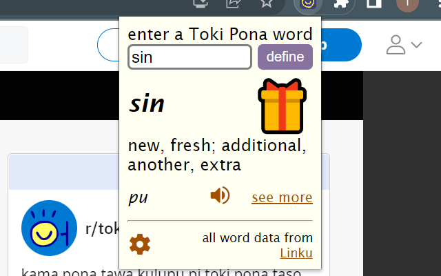

Toki Pona Dictionary - ilo nimi pi toki pona
A Google Chrome extension for looking up words in the language
Get it on the Chrome Web Store or visit the source code
The extension can display definitions in multiple languages, and is only possible thanks to the online database of words Linku and the community members that build and support it.
Kindle Dictionaries for Toki Pona
When I started trying to read books in Toki Pona while still new to the language, I found myself repeatedly having to look up words on another device, interrupting the experience. Unlike with English texts, I couldn't quickly get a definition by highlighting a word. After researching and finding out how to import - and create - a custom kindle dictionary, I got to work creating one using pre-existing dictionaries (thanks again to Linku)
to get dictionaries you can either build from source or download one from releases